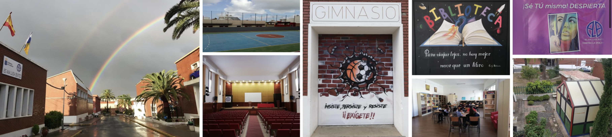
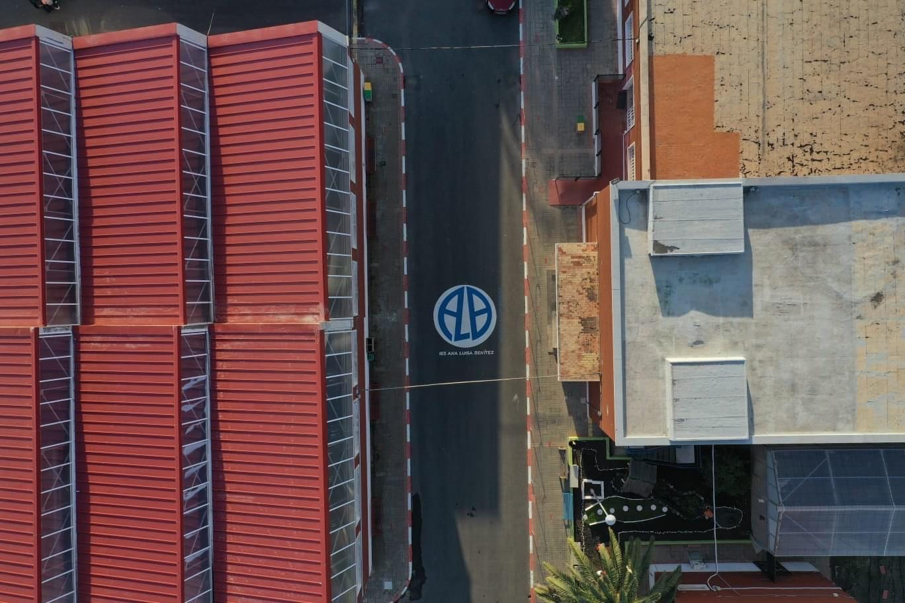
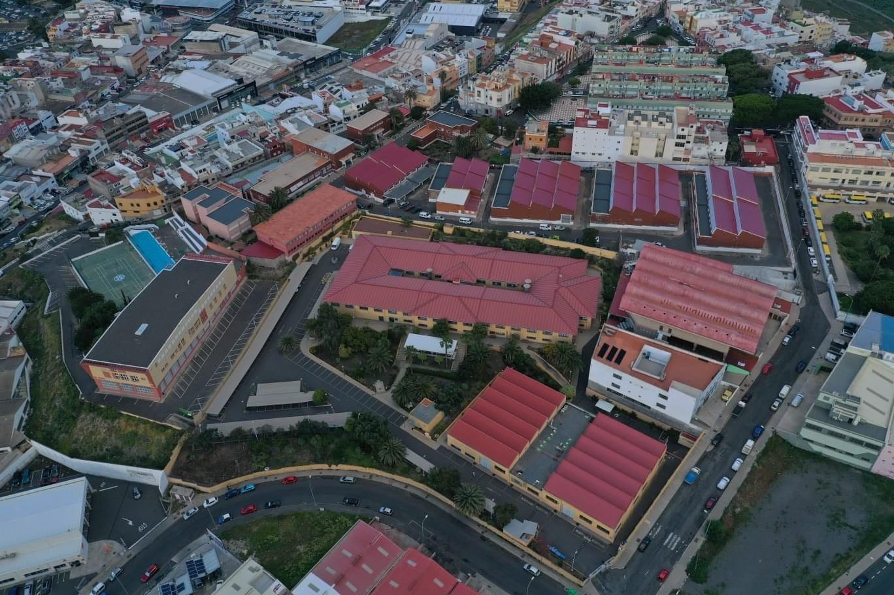

Nuestro centro

El IES Ana Luisa Benítez es un centro que inicio su andadura en 1968 con el nombre IES Lomo Apolinario y desde ese momento ha ido evolucionando en cuando a las enseñanzas que se han venido impartiendo. Somos un centro comprometido con la formación integral de los jóvvenes en asuntos tan fundamentales como la Paz, la Igualdad, la defensa del medioambiente, etc...
| Denominación: | IES Ana Luisa Benítez |
| Tipo de centro: | Instituto de Educación Secundaria |
| Teléfono: | 928 091 432 |
| Dirección: | C/ Ana Luisa Benítez, 15 |
| Código Postal: | 35014 |
| Localidad | Las Palmas de Gran Canaria |
| Correo electrónico: | 35007842@gobiernodecanarias.org |
| Centro del Profesorado: | 350700468 - C.Profesorado Las Palmas de Gran Canaria |
Horario
| Lunes | Martes | Miércoles | Jueves | Viernes | Sábado / Domingo |
|---|---|---|---|---|---|
| 07:30 a 21:30 | 07:30 a 21:30 | 07:30 a 21:30 | 07:30 a 21:30 | 07:30 a 21:30 | Cerrado |